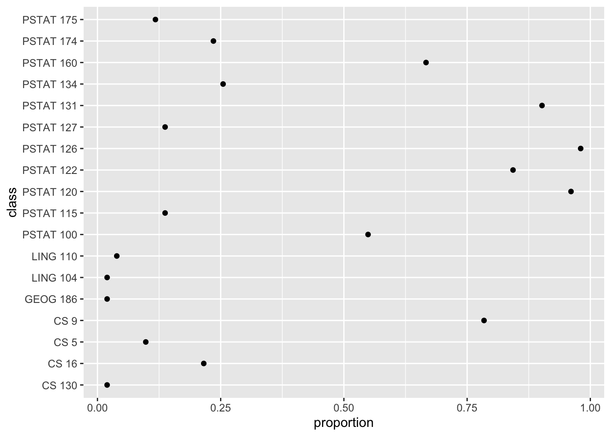
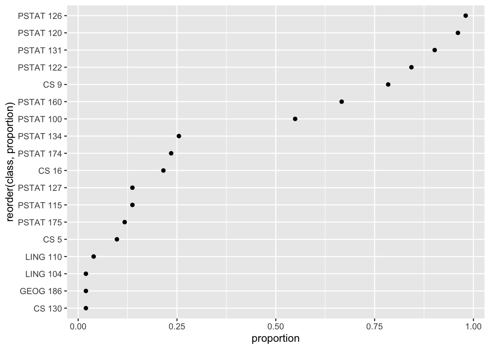
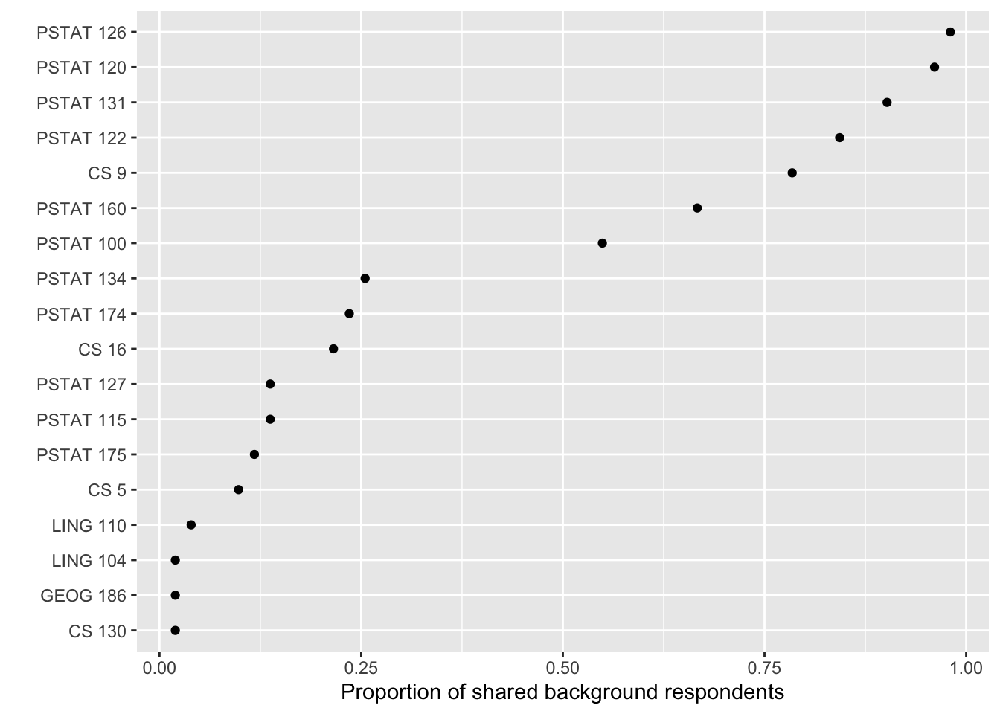

# a number
4.5[1] 4.5# check structure
str(4.5) num 4.5# stored as double
is.double(4.5)[1] TRUERead through the R Basics section and then complete all actions in the Tidyverse basics section. This lab is for your own benefit and no submission is expected.
Objectives:
Review R basics (data types and object classes);
introduce core tidyverse libraries (dplyr, tidyr, and ggplot);
replicate portions of in-class analysis of class survey data
Here we’ll cover some bare essentials in R. You can find a more thorough introduction in MSDR Appendix B.
We will focus on four common atomic data types in R and one important class for categorical data: factors.
Numeric data represent real numbers and are normally stored as double-precision floating-point values in R. Numeric data are abbreviated num and by default are stored as double-precision floating point.
# a number
4.5[1] 4.5# check structure
str(4.5) num 4.5# stored as double
is.double(4.5)[1] TRUEInteger data are integers. For the most part they behave like numeric data, except occupy less memory, which can in some cases be convenient. To distinguish integers from doubles, R uses a trailing L after values; the data type is abbreviated int.
# an integer
4L[1] 4# check structure
str(4L) int 4Logical data are binary and represented in R as having values TRUE and FALSE. They are abbreviated logi in R. Often they are automatically coerced to integer data with values 0 (false) and 1 (true) to perform arithmetic and other operations.
# logical value
TRUE[1] TRUE# check structure
str(TRUE) logi TRUE# arithmetic
TRUE + FALSE[1] 1# check structure
str(FALSE + FALSE) int 0Character data represent strings of text and are sometimes called ‘strings’. They are abbreviated chr in R and values are surrounded by quotation marks; this distinguishes, for example, the character 4 from the number 4. Single quotations can be used to input strings as well as double quotations. Arithmetic is not possible with strings for obvious reasons.
# a character string
'yay'[1] "yay"# check structure
str('yay') chr "yay"# string arithmetic won't work
# '4' + '1'
# but can be performed after converting character strings to numbers
as.numeric('4') + as.numeric('1')[1] 5Factors represent categorical variables. A factor is an object class built on an integer vector, rather than a separate atomic data type. In R these are encoded numerically according to the number of ‘levels’ of the factor, which represent the unique values of the categorical variable, and each level is labeled. R will print the labels, not the levels, of factors; the data type is abbreviated fct.
# a factor
factor(1, levels = c(1, 2), labels = c('blue', 'red'))[1] blue
Levels: blue red# less verbose definition
factor('blue', levels = c('blue', 'red'))[1] blue
Levels: blue red# check structure
str(factor('blue', levels = c('blue', 'red'))) Factor w/ 2 levels "blue","red": 1CSV files do not preserve factor definitions. In this lab, read_csv() imports proficiency labels as character data, and we explicitly convert them to ordered factors. The levels and labels of factors can be manipulated using a variety of helper functions.
The most basic type of object in R is a vector. Vectors are concatenations of data values of the same type. They are defined using the concatenation operator c() and are indexed by consecutive integers; subvectors can be retrieved by specifying the indices between square brackets.
# numeric vector
c(1, 4, 7)[1] 1 4 7# character vector
c('blue', 'red')[1] "blue" "red" # indexing
c(1, 4, 7)[1][1] 1c(1, 4, 7)[2][1] 4c(1, 4, 7)[3][1] 7c(1, 4, 7)[2:3][1] 4 7c(1, 4, 7)[c(1, 3)][1] 1 7Usually objects are assigned names for easy retrieval. Vectors will not show any special object class if the structure is examined; str() will simply return the data type, index range, and the values.
# assign a name
my_vec <- c(1, 4, 7)
# check structure
str(my_vec) num [1:3] 1 4 7Next up in complexity are arrays. These are blocks of data values of the same type indexed along one or more dimensions. For arrays, str() will return the data type, index structure, and data values; when printed directly, data values are arranged according to the indexing.
# an array
my_ary <- array(data = c(1, 2, 3, 4, 5, 6, 7, 8),
dim = c(2, 4))
my_ary [,1] [,2] [,3] [,4]
[1,] 1 3 5 7
[2,] 2 4 6 8str(my_ary) num [1:2, 1:4] 1 2 3 4 5 6 7 8# another array
my_oth_ary <- array(data = c(1, 2, 3, 4, 5, 6, 7, 8),
dim = c(2, 2, 2))
my_oth_ary, , 1
[,1] [,2]
[1,] 1 3
[2,] 2 4
, , 2
[,1] [,2]
[1,] 5 7
[2,] 6 8str(my_oth_ary) num [1:2, 1:2, 1:2] 1 2 3 4 5 6 7 8For arrays, elements can be retrieved by index coordinates, and slices can be retrieved by leaving index positions blank, which will return all elements along the corresponding indices.
# one element
my_ary[1, 2][1] 3# one element
my_oth_ary[1, 2, 1][1] 3# a slice (second row)
my_ary[2, ][1] 2 4 6 8# a slice (first layer)
my_oth_ary[ , , 1] [,1] [,2]
[1,] 1 3
[2,] 2 4Next there are lists, which are perhaps the most flexible data structure. A list is an indexed collection of any objects.
# a list
list('cat', c(1, 4, 7), TRUE)[[1]]
[1] "cat"
[[2]]
[1] 1 4 7
[[3]]
[1] TRUE# a named list
list(animal = 'cat',
numbers = c(1, 4, 7),
short = TRUE)$animal
[1] "cat"
$numbers
[1] 1 4 7
$short
[1] TRUEList elements can be retrieved by index in double square brackets, or by name.
# assign a name
my_lst <- list(animal = 'cat',
numbers = c(1, 4, 7),
short = TRUE)
# check structure
str(my_lst)List of 3
$ animal : chr "cat"
$ numbers: num [1:3] 1 4 7
$ short : logi TRUE# retrieve an element
my_lst[[1]][1] "cat"# equivalent
my_lst$animal[1] "cat"Finally, data frames are type-heterogeneous lists of vectors of equal length. More informally, they are 2D arrays with columns of differing data types. str() will essentially show the list structure; but when printed, data frames will appear arranged in a table.
# a data frame
my_df <- data.frame(animal = c('cat', 'hare', 'tortoise'),
has.fur = c(TRUE, TRUE, FALSE),
weight.lbs = c(9.1, 8.2, 22.7))
str(my_df)'data.frame': 3 obs. of 3 variables:
$ animal : chr "cat" "hare" "tortoise"
$ has.fur : logi TRUE TRUE FALSE
$ weight.lbs: num 9.1 8.2 22.7my_df animal has.fur weight.lbs
1 cat TRUE 9.1
2 hare TRUE 8.2
3 tortoise FALSE 22.7The data frame is the standard object type for representing datasets in R. For the most part, modern computing in R is designed around the data frame.
R packages are add-ons that can include special functions, datasets, object classes, and the like. They are published software and can be installed using install.packages('PACKAGE NAME') and, once installed, loaded via library('PACKAGE NAME') or require('PACKAGE NAME').
We will illustrate the use of tidyverse functions to reproduce the analysis shown in class of the survey data.
Load class survey data
background-clean.csv, interest-clean.csv, and survey-metadata.csv are in the repository’s data folder. Your instructor provides these files.lab2-tidyverse.R. Keep the supplied class-analysis.R as the starting point for your group’s analysis.install.packages('tidyverse') in the Console.library(tidyverse)
# Load the current class data from this repository.
background <- read_csv('data/background-clean.csv', show_col_types = FALSE)
interest <- read_csv('data/interest-clean.csv', show_col_types = FALSE)
metadata <- read_csv('data/survey-metadata.csv', show_col_types = FALSE)
# CSVs store proficiency labels as text; define their order explicitly.
background <- background %>%
mutate(across(ends_with('.prof'),
~ factor(.x, levels = c('beg', 'int', 'adv'), ordered = TRUE)))
nrow(background)[1] 51nrow(interest)[1] 49There are 55 survey responses overall. The shared background file contains 51 respondents who consented to share skills and experience; the project-preference file contains 49 respondents who consented to share that section. All 49 consented to both sections. Each analysis describes the respondents included in the relevant file or join.
The files exclude personal information and free-text narratives. response_id is an artificial identifier that connects the two shared sections. Keep these data within the class; do not share outside of the course.
The metadata’s data.file column identifies the file containing each variable. It also documents class-summary.csv and response-timing.csv, which contain aggregate summaries used in the lecture slides. Those two files are not required for this lab and cannot be joined to individual responses.
You can view the data in one of two ways:
# print the data frame for inspection in the console
background# A tibble: 51 × 11
response_id prog.prof prog.comf math.prof math.comf stat.prof stat.comf
<dbl> <ord> <dbl> <ord> <dbl> <ord> <dbl>
1 1001 int 4 int 4 adv 5
2 1002 int 4 int 3 int 5
3 1003 beg 3 int 3 adv 4
4 1004 adv 4 adv 5 adv 5
5 1005 adv 4 int 4 adv 5
6 1006 int 4 int 2 adv 4
7 1007 int 3 int 3 int 3
8 1008 int 3 int 4 adv 4
9 1009 int 4 adv 4 adv 4
10 1010 int 4 int 5 adv 5
# ℹ 41 more rows
# ℹ 4 more variables: upper_div_courses <chr>, courses <chr>,
# domain_specialization <chr>, research <chr># In the RStudio Console, run View(background) to open the data viewer.Run View(metadata) in the RStudio Console and inspect the datasets. You can also select the metadata entries for one file:
metadata %>%
filter(data.file == 'background-clean.csv') %>%
select(variable.name, variable.description, variable.type, values.notes)# A tibble: 11 × 4
variable.name variable.description variable.type values.notes
<chr> <chr> <chr> <chr>
1 response_id Artificial respondent ident… identifier, … Artificial …
2 prog.prof Self-rated proficiency in p… ordinal, cha… beg = Begin…
3 prog.comf Self-rated comfort with pro… ordinal, num… Original nu…
4 math.prof Self-rated proficiency in m… ordinal, cha… beg = Begin…
5 math.comf Self-rated comfort with mat… ordinal, num… Original nu…
6 stat.prof Self-rated proficiency in s… ordinal, cha… beg = Begin…
7 stat.comf Self-rated comfort with sta… ordinal, num… Original nu…
8 upper_div_courses Approximate number of upper… ordinal, cha… 3-5; 6-8; 9+
9 courses Completed courses selected … multiple sel… Comma-separ…
10 domain_specialization Whether the respondent repo… categorical,… Yes; No; Un…
11 research Any supervised research exp… categorical,… Derived: Ye…Notice these details before starting:
research and domain_specialization use Yes, No, and Unsure, not numeric 0/1 codes.upper_div_courses contains the categories 3-5, 6-8, and 9+, not exact course counts.courses stores each respondent’s selected courses in one comma-separated string.beg, int, and adv. Comfort responses are numeric ratings.The tidyverse is a collection of packages for data manipulation, visualization, and statistical modeling. Some are specialized, such as forcats or lubridate, which contain functions for manipulating factors and dates and times, respectively. The packages share some common underlying principles.
%>%The tidyverse facilitates programming in readable sequences of steps that are performed on data frames. For example:
my_df %>% STEP1() %>% STEP2() %>% STEP3()If it helps, imagine that step 1 is defining a new variable, step 2 is selecting a subset of columns, and step 3 is fitting a model of some kind.
tidyverse packages use a slight generalization of the data frame called a tibble. For the most part, tibbles behave as data frames do, but they are slightly more flexible in ways you’ll encounter later.
For now, think of a tibble as just another name for a data frame.
%>%In short, x %>% f(y) is equivalent to f(x, y) .
In other words, the pipe operator ‘pipes’ the result of the left-hand operation into the first argument of the right-hand function.
# a familiar example
my_vec <- c(1, 2, 5)
str(my_vec) num [1:3] 1 2 5# use the pipe operator instead
my_vec %>% str() num [1:3] 1 2 5The dplyr package contains functions for manipulating data frames (tibbles). The functions are named with verbs that describe common operations.
For each verb listed below, copy the code chunk into your script and execute.
Go through the list with your neighbor and check your understanding by describing what the code example accomplishes.
filter – filter the rows of a data frame according to a condition and return a subset of rows meeting that condition
# filter rows
background %>%
filter(math.comf > 3)# A tibble: 38 × 11
response_id prog.prof prog.comf math.prof math.comf stat.prof stat.comf
<dbl> <ord> <dbl> <ord> <dbl> <ord> <dbl>
1 1001 int 4 int 4 adv 5
2 1004 adv 4 adv 5 adv 5
3 1005 adv 4 int 4 adv 5
4 1008 int 3 int 4 adv 4
5 1009 int 4 adv 4 adv 4
6 1010 int 4 int 5 adv 5
7 1013 adv 4 adv 4 adv 4
8 1014 int 3 adv 4 adv 4
9 1015 int 3 int 4 adv 4
10 1016 adv 5 adv 4 adv 5
# ℹ 28 more rows
# ℹ 4 more variables: upper_div_courses <chr>, courses <chr>,
# domain_specialization <chr>, research <chr>select – select a subset of columns from a data frame
# select a column
background %>%
select(math.comf)# A tibble: 51 × 1
math.comf
<dbl>
1 4
2 3
3 3
4 5
5 4
6 2
7 3
8 4
9 4
10 5
# ℹ 41 more rowspull – extract a single column from a data frame
# pull a column
background %>%
pull(research) [1] "No" "Yes" "No" "No" "No" "No" "Yes" "Unsure"
[9] "Yes" "Yes" "Unsure" "No" "Yes" "Unsure" "Yes" "No"
[17] "No" "No" "Yes" "No" "No" "No" "No" "Yes"
[25] "Yes" "Yes" "No" "Yes" "No" "Yes" "No" "Unsure"
[33] "Yes" "No" "No" "Yes" "No" "Yes" "Yes" "No"
[41] "Yes" "Yes" "No" "Yes" "Yes" "No" "No" "Yes"
[49] "Yes" "No" "Yes" mutate – define a new column as a function of existing columns
# define a new variable
background %>%
mutate(avg.comf = (math.comf + prog.comf + stat.comf)/3)# A tibble: 51 × 12
response_id prog.prof prog.comf math.prof math.comf stat.prof stat.comf
<dbl> <ord> <dbl> <ord> <dbl> <ord> <dbl>
1 1001 int 4 int 4 adv 5
2 1002 int 4 int 3 int 5
3 1003 beg 3 int 3 adv 4
4 1004 adv 4 adv 5 adv 5
5 1005 adv 4 int 4 adv 5
6 1006 int 4 int 2 adv 4
7 1007 int 3 int 3 int 3
8 1008 int 3 int 4 adv 4
9 1009 int 4 adv 4 adv 4
10 1010 int 4 int 5 adv 5
# ℹ 41 more rows
# ℹ 5 more variables: upper_div_courses <chr>, courses <chr>,
# domain_specialization <chr>, research <chr>, avg.comf <dbl>These operations can be chained together, for example:
# sequence of verbs
background %>%
filter(stat.prof == 'adv') %>%
mutate(avg.comf = (math.comf + prog.comf + stat.comf)/3) %>%
select(avg.comf, research) # A tibble: 33 × 2
avg.comf research
<dbl> <chr>
1 4.33 No
2 3.33 No
3 4.67 No
4 4.33 No
5 3.33 No
6 3.67 Unsure
7 4 Yes
8 4.67 Yes
9 3 No
10 4 Yes
# ℹ 23 more rowsresearch == 'Yes' and upper_div_courses == '6-8'.research == 'No' in the same course-count category. Keep Unsure distinct from No.Summaries reduce rows to summary values using summarize(). For example, among respondents who rated their statistics proficiency as advanced, what proportion reported research experience? research == 'Yes' creates a logical vector whose mean is the proportion of TRUE values. Here the denominator includes all advanced respondents with a nonmissing research response, including those who answered Unsure.
# a summary
background %>%
filter(stat.prof == 'adv') %>%
mutate(avg.comf = (math.comf + prog.comf + stat.comf)/3) %>%
select(avg.comf, research) %>%
summarize(prop.research = mean(research == 'Yes', na.rm = TRUE))# A tibble: 1 × 1
prop.research
<dbl>
1 0.394# equivalent
background %>%
filter(stat.prof == 'adv') %>%
mutate(avg.comf = (math.comf + prog.comf + stat.comf)/3) %>%
select(avg.comf, research) %>%
pull(research) %>%
{mean(. == 'Yes', na.rm = TRUE)}[1] 0.3939394The advantage of summarize , however, is that multiple summaries can be computed at once:
background %>%
filter(stat.prof == 'adv') %>%
mutate(avg.comf = (math.comf + prog.comf + stat.comf)/3) %>%
select(avg.comf, research) %>%
summarize(prop.research = mean(research == 'Yes', na.rm = TRUE),
med.comf = median(avg.comf, na.rm = TRUE))# A tibble: 1 × 2
prop.research med.comf
<dbl> <dbl>
1 0.394 4.33Use across() inside summarize() to apply the same summary to several columns. The helper ends_with() selects columns with a particular suffix.
# average comfort levels across shared background respondents
background %>%
summarise(across(ends_with('.comf'), ~ mean(.x, na.rm = TRUE)))# A tibble: 1 × 3
prog.comf math.comf stat.comf
<dbl> <dbl> <dbl>
1 3.71 3.94 4.14Grouped summaries are summaries computed separately among subsets of observations. To define a grouping structure using an existing column, use group_by() . Notice the ‘groups’ attribute printed with the output.
# create a grouping
background %>%
group_by(stat.prof)# A tibble: 51 × 11
# Groups: stat.prof [2]
response_id prog.prof prog.comf math.prof math.comf stat.prof stat.comf
<dbl> <ord> <dbl> <ord> <dbl> <ord> <dbl>
1 1001 int 4 int 4 adv 5
2 1002 int 4 int 3 int 5
3 1003 beg 3 int 3 adv 4
4 1004 adv 4 adv 5 adv 5
5 1005 adv 4 int 4 adv 5
6 1006 int 4 int 2 adv 4
7 1007 int 3 int 3 int 3
8 1008 int 3 int 4 adv 4
9 1009 int 4 adv 4 adv 4
10 1010 int 4 int 5 adv 5
# ℹ 41 more rows
# ℹ 4 more variables: upper_div_courses <chr>, courses <chr>,
# domain_specialization <chr>, research <chr>Sometimes it can be helpful to simply count the observations in each group:
# count observations
background %>%
group_by(stat.prof) %>%
count()# A tibble: 2 × 2
# Groups: stat.prof [2]
stat.prof n
<ord> <int>
1 int 18
2 adv 33To compute a grouped summary, first group the data frame and then specify the summary of interest:
# a grouped summary
background %>%
group_by(stat.prof) %>%
summarise(across(ends_with('.comf'), ~ mean(.x, na.rm = TRUE)),
.groups = 'drop')# A tibble: 2 × 4
stat.prof prog.comf math.comf stat.comf
<ord> <dbl> <dbl> <dbl>
1 int 3.67 3.61 3.67
2 adv 3.73 4.12 4.39Grouped summaries
upper_div_courses. Treat this as an ordered category, not an exact numeric count.inner_join() matches rows using a shared identifier. Use response_id, because the two files have different row counts and cannot be combined by row position.
joint <- background %>%
inner_join(interest, by = 'response_id')
nrow(joint)[1] 49joint %>%
count(type)# A tibble: 3 × 2
type n
<chr> <int>
1 both 11
2 ind 32
3 lab 6The join contains 49 respondents who consented to both sections. The type codes are ind for industry, lab for research lab, and both for no preference. The last code does not mean that a respondent requested both types of project.
Calculate mean programming comfort within each project-preference category. Which respondents are included in this summary? Why is the denominator different from a summary of the full background file?
The tidyr package reshapes data frames. We will use pivot_longer(), separate(), and pivot_wider() to make a summary table, then separate_rows() to work with course selections.
Suppose we calculate multiple summaries of multiple variables. The initial output has one row and one column for each variable/statistic combination:
# many variables, many summaries
comf_sum <- background %>%
summarise(across(
ends_with('.comf'),
list(mean = ~ mean(.x, na.rm = TRUE),
median = ~ median(.x, na.rm = TRUE),
min = ~ min(.x, na.rm = TRUE),
max = ~ max(.x, na.rm = TRUE)),
.names = '{.col}_{.fn}'
))
comf_sum# A tibble: 1 × 12
prog.comf_mean prog.comf_median prog.comf_min prog.comf_max math.comf_mean
<dbl> <dbl> <dbl> <dbl> <dbl>
1 3.71 4 2 5 3.94
# ℹ 7 more variables: math.comf_median <dbl>, math.comf_min <dbl>,
# math.comf_max <dbl>, stat.comf_mean <dbl>, stat.comf_median <dbl>,
# stat.comf_min <dbl>, stat.comf_max <dbl>pivot_longer() collects the columns into a long table. One column contains the original column name and another contains its value:
comf_sum %>%
pivot_longer(everything(), names_to = 'stat', values_to = 'val')# A tibble: 12 × 2
stat val
<chr> <dbl>
1 prog.comf_mean 3.71
2 prog.comf_median 4
3 prog.comf_min 2
4 prog.comf_max 5
5 math.comf_mean 3.94
6 math.comf_median 4
7 math.comf_min 2
8 math.comf_max 5
9 stat.comf_mean 4.14
10 stat.comf_median 4
11 stat.comf_min 3
12 stat.comf_max 5 separate() splits the original column name at the underscore, giving us the survey variable and the summary statistic:
comf_sum %>%
pivot_longer(everything(), names_to = 'stat', values_to = 'val') %>%
separate(stat, into = c('variable', 'stat'), sep = '_')# A tibble: 12 × 3
variable stat val
<chr> <chr> <dbl>
1 prog.comf mean 3.71
2 prog.comf median 4
3 prog.comf min 2
4 prog.comf max 5
5 math.comf mean 3.94
6 math.comf median 4
7 math.comf min 2
8 math.comf max 5
9 stat.comf mean 4.14
10 stat.comf median 4
11 stat.comf min 3
12 stat.comf max 5 pivot_wider() then makes one column per summary statistic. The result has three rows, one for each subject, and four summary columns plus the variable-name column:
comf_sum %>%
pivot_longer(everything(), names_to = 'stat', values_to = 'val') %>%
separate(stat, into = c('variable', 'stat'), sep = '_') %>%
pivot_wider(names_from = stat, values_from = val)# A tibble: 3 × 5
variable mean median min max
<chr> <dbl> <dbl> <dbl> <dbl>
1 prog.comf 3.71 4 2 5
2 math.comf 3.94 4 2 5
3 stat.comf 4.14 4 3 5Explain what one row represents after each reshaping step. Which step changes the number of rows, and which splits an existing column?
The ggplot2 package is for data visualization. The syntax takes some getting used to if you haven’t seen it before. We’ll just look at one example.
Suppose we want to summarize prior coursework among the shared background respondents. The new data store course selections in a single courses column. First use separate_rows() to give each selected course its own row:
course_responses <- background %>%
select(response_id, courses) %>%
separate_rows(courses, sep = ',\\s*') %>%
mutate(courses = str_trim(courses)) %>%
filter(!is.na(courses), courses != '') %>%
distinct(response_id, courses)
course_responses# A tibble: 356 × 2
response_id courses
<dbl> <chr>
1 1001 PSTAT 115
2 1001 PSTAT 120
3 1001 PSTAT 122
4 1001 PSTAT 126
5 1001 PSTAT 127
6 1001 PSTAT 131
7 1001 PSTAT 160
8 1001 CS 9
9 1002 PSTAT 120
10 1002 PSTAT 126
# ℹ 346 more rowsOne respondent can now appear on several rows. distinct() ensures that a respondent is counted at most once per course.
# count respondents selecting each course
classes <- course_responses %>%
count(courses, name = 'n') %>%
rename(class = courses) %>%
mutate(proportion = n / nrow(background))
classes# A tibble: 18 × 3
class n proportion
<chr> <int> <dbl>
1 CS 130 1 0.0196
2 CS 16 11 0.216
3 CS 5 5 0.0980
4 CS 9 40 0.784
5 GEOG 186 1 0.0196
6 LING 104 1 0.0196
7 LING 110 2 0.0392
8 PSTAT 100 28 0.549
9 PSTAT 115 7 0.137
10 PSTAT 120 49 0.961
11 PSTAT 122 43 0.843
12 PSTAT 126 50 0.980
13 PSTAT 127 7 0.137
14 PSTAT 131 46 0.902
15 PSTAT 134 13 0.255
16 PSTAT 160 34 0.667
17 PSTAT 174 12 0.235
18 PSTAT 175 6 0.118 The denominator is 51 shared background respondents, not 55 total survey responses or the number of rows in course_responses. There are no missing course responses in the supplied background file. A course-series selection means at least one course in that series, and courses selected by nobody do not appear in this table. Proportions need not sum to one because respondents selected multiple courses.
We could report the results in a table, in which case perhaps arranging in descending order may be helpful:
classes %>% arrange(desc(proportion))# A tibble: 18 × 3
class n proportion
<chr> <int> <dbl>
1 PSTAT 126 50 0.980
2 PSTAT 120 49 0.961
3 PSTAT 131 46 0.902
4 PSTAT 122 43 0.843
5 CS 9 40 0.784
6 PSTAT 160 34 0.667
7 PSTAT 100 28 0.549
8 PSTAT 134 13 0.255
9 PSTAT 174 12 0.235
10 CS 16 11 0.216
11 PSTAT 115 7 0.137
12 PSTAT 127 7 0.137
13 PSTAT 175 6 0.118
14 CS 5 5 0.0980
15 LING 110 2 0.0392
16 CS 130 1 0.0196
17 GEOG 186 1 0.0196
18 LING 104 1 0.0196Let’s say we’d rather plot this data. We’ll put the course number on one axis and the proportion of students who took it on the other.
# plot it
classes %>%
ggplot(aes(x = proportion, y = class)) +
geom_point()
These commands work by defining plot layers. In the chunk above, the first argument to ggplot() is the data. Then, aes() defines an ‘aesthetic mapping’ of the columns of the input data frame to graphical elements. This defines a set of axes. Then, a layer of points is added to the plot with geom_point() ; no arguments are needed because the geometric object (‘geom’) inherits attributes (x and y coordinates) from the aesthetic mapping.
Again we might prefer to arrange the classes by descending order in proportion.
fig <- classes %>%
ggplot(aes(x = proportion, y = reorder(class, proportion))) +
geom_point()
fig
And perhaps fix the plot labels:
# adjust labels
fig + labs(x = 'Proportion of shared background respondents', y = '')
Notice that ggplot allows for a plot to be stored by name and then further modified with additional layers.
lab2-tidyverse.R in the repository root, beside the data folder.When extending the group analysis, consult survey-metadata.csv before parsing other multiple-selection columns. In particular, areas contains option labels with internal commas, such as Predictive modeling, generally. Splitting that column at every comma would break the labels. Use complete option labels with str_detect() and fixed() instead.